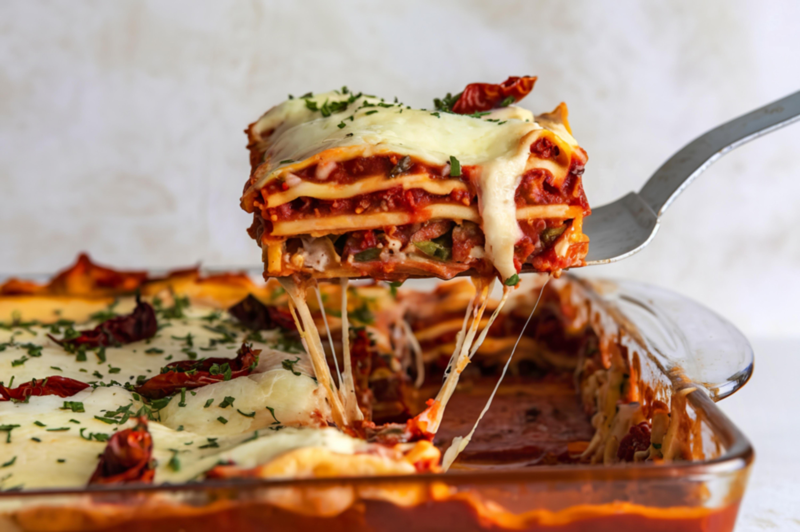
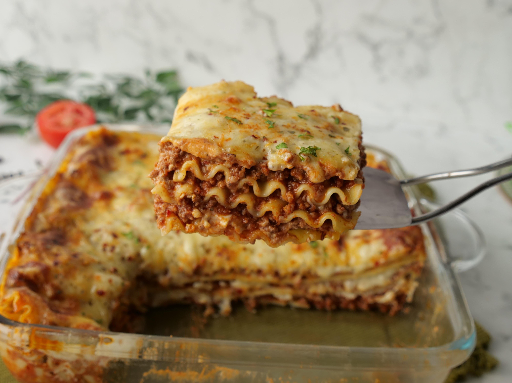

lasagna Recipes


Description
Lasagna is an iconic Italian dish, beloved worldwide for its deeply comforting layers of flavor and texture. At its heart, it is a baked pasta casserole constructed from wide, flat sheets of pasta, alternating with a rich, slow-simmered meat sauce (often a combination of ground beef and Italian sausage in a tomato base) and a creamy cheese filling. The cheese component typically includes a savory mixture of ricotta or cottage cheese, bound with egg and flavored with Parmesan and fresh herbs, providing a cool, tangy contrast to the robust, acidic tomato sauce.
Ingredients:
- The Pasta
- Lasagna Noodles: Wide, flat sheets of pasta. These are usually boiled until al dente before assembly, but some recipes use "no-boil" noodles.
- The Meat Sauce (Ragu)
This is a rich, slow-simmered tomato sauce, often including:
- Meat: A combination of Ground Beef and Italian Sausage (sweet or hot) is common for the deepest flavor, though some recipes use just one or the other.
- Aromatics: Diced Onion and Minced Garlic.
- Tomato Base: A mix of Crushed Tomatoes, Tomato Sauce, and Tomato Paste.
- Seasonings: Italian Seasoning, Dried Oregano, Basil, Salt, and Black Pepper. A pinch of Sugar is sometimes added to balance the tomato acidity.
- Other: Olive Oil for cooking.
- The Cheese Layers
A blend of cheeses is used for creamy layers and a browned, melty topping:
- Creamy Filling: Ricotta Cheese (or sometimes Cottage Cheese), which is mixed with a Large Egg (to help it set), fresh Parsley or Basil, and a bit of Salt and Pepper.
- Melting Cheese: Shredded Mozzarella Cheese, used generously in the layers and on top.
- Pungent Cheese: Grated Parmesan Cheese or Parmigiano-Reggiano, added to the ricotta mixture and sprinkled over the top layer for flavor and a golden crust.
Steps:
- Prepare the Sauce: Brown the ground meat (beef and/or sausage) with chopped onions and garlic. Drain any excess fat. Stir in the tomatoes, tomato paste, water (or wine/broth), and seasonings (oregano, basil, salt, pepper). Simmer the meat sauce for at least 15-30 minutes to develop the flavor.
- Cook the Pasta: Bring a large pot of salted water to a boil. Cook the lasagna noodles to a firm, al dente stage (a little less than the package directs, as they will continue to cook in the oven). Drain the noodles and lay them flat to prevent sticking (or use oven-ready/no-boil noodles).
- Mix the Cheese Filling: In a separate bowl, combine the ricotta (or cottage cheese), egg, grated Parmesan cheese, fresh parsley/basil, and seasonings. Mix until thoroughly combined.
- Preheat Oven: Preheat your oven to the required temperature (typically 350-375 F).
- Start the Base: Spread a thin layer of the meat sauce on the bottom of a greased 9x13-inch baking dish. This prevents the bottom noodles from sticking and helps them cook.
- Add First Noodle Layer: Lay a layer of lasagna noodles over the sauce, trimming or slightly overlapping them as needed to cover the base.
- Add First Cheese Layer: Spread half of the prepared creamy ricotta mixture evenly over the noodles.
- Add First Sauce/Meat Layer: Spoon one-third of the remaining meat sauce evenly over the cheese mixture.
- Sprinkle Mozzarella: Sprinkle a generous amount of the shredded mozzarella cheese over the sauce.
- Repeat Layers: Add a second layer of noodles, followed by the remaining half of the ricotta mixture, then another third of the meat sauce, and more mozzarella.
- Final Top Layer: Place the final layer of noodles, then top them with the remaining meat sauce.
- Add Final Cheeses: Finish the top by spreading a final, generous layer of shredded mozzarella and a sprinkle of Parmesan cheese.
- Bake Covered: Cover the dish tightly with aluminum foil (you can lightly spray the underside of the foil to prevent sticking to the cheese). Bake for the time specified in the recipe (usually 30–45 minutes).
- Bake Uncovered: Remove the foil and continue to bake for an additional 10–15 minutes until the cheese is melted, bubbly, and golden brown.
- Rest: Remove the lasagna from the oven and let it rest for at least 15 to 20 minutes before slicing and serving. This allows the internal temperature to equalize and the layers to set, preventing a runny mess.
Home